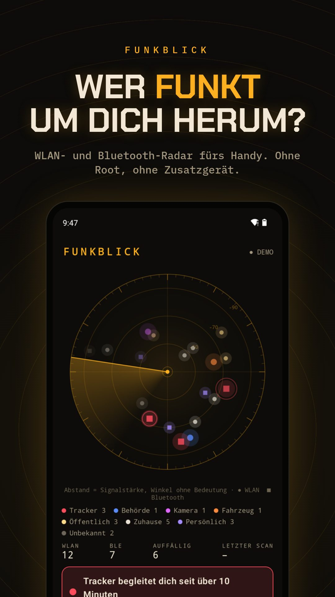
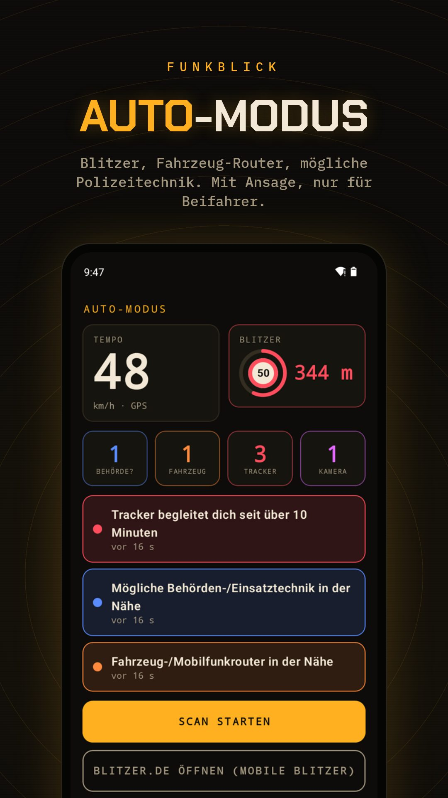

WLAN · BLUETOOTH · ANDROID
WLAN- und Bluetooth-Radar fürs Handy
Funkblick ist eine WLAN-Scanner-App und ein BLE-Scanner fürs Handy: Sie zeigt jedes WLAN und jedes Bluetooth-Gerät, das dein Handy hört, sagt, wer es gebaut hat und was es vermutlich ist, und meldet sich, wenn es wichtig wird: ein Tracker, der seit zehn Minuten mitfährt, eine Kamera mit eigenem WLAN, ein Blitzer voraus. Ohne Root, ohne Konto, Open Source.
APK herunterladenQuellcode auf GitHub
Kostenlos, Android 8.0 oder neuer, läuft auf GrapheneOS ohne Google-Dienste. Kein Konto. Updates holt die App selbst von GitHub.



Was drin ist
Radar
Jedes WLAN und Bluetooth-Gerät in Reichweite, nach Signalstärke. Kreis = WLAN, Quadrat = Bluetooth, Farbe = Art.
Tracker-Schutz
AirTag, SmartTag, Tile, Chipolo, Google „Mein Gerät finden“, Pebblebee. Warnt, wenn einer über 10 Minuten bei dir ist.
Mehr dazu →Kameras
Findet Kameras, die ein eigenes WLAN aufmachen, und Kamera-Hersteller wie Hikvision, EZVIZ oder Ring.
Mehr dazu →Auto-Modus
Große Anzeige, Ansagen, feste Blitzer aus OpenStreetMap, Fahrzeug-Router und mögliche Behördentechnik. Nur für Beifahrer.
Mehr dazu →WLAN-Kanal
Zeigt, welcher Kanal bei dir am freiesten ist. EU-Kanäle 1 bis 13, DFS-Hinweis, Tipp für die FRITZ!Box.
Mehr dazu →Logs und Export
Jede Sitzung als JSON auf dem Handy. Export als CSV, JSON oder KI-Bericht zum Einfügen in ChatGPT oder Claude.
Was Funkblick nicht kann
- Keine Richtung. Ein Handy misst nur, wie stark ein Signal ist. Der Winkel im Radar ist ein fester Platz pro Gerät, kein Kompass.
- Nur Zugangspunkte. Android zeigt WLAN-Router und Hotspots, keine Geräte, die nur verbunden sind. Eine Kamera im fremden Heimnetz sieht Funkblick nicht.
- Kein Behördenfunk. Polizei und Rettungsdienst funken per TETRA um 400 MHz. Das empfängt kein Handy. Funkblick sieht nur WLAN und Bluetooth ihrer Geräte, wenn sie welche haben.
- Zufallsadressen. Handys und Tracker wechseln ihre Bluetooth-Adresse. Funkblick liest dann, was das Gerät sendet, statt den Hersteller zu raten.
Installieren
- Funkblick.apk auf dem Handy herunterladen und öffnen. Fragt Android, die Installation aus dem Browser erlauben.
- Funkblick öffnen und Scan starten tippen. Standort erlauben (ohne gibt Android keine WLAN-Ergebnisse heraus) und Geräte in der Nähe.
- Oder erst Demo ansehen tippen: das Radar mit erfundener Umgebung.
Häufige Fragen
Braucht Funkblick Root?
Nein. Funkblick nutzt den WLAN- und Bluetooth-Scan, den jedes Android-Handy hat. Kein Root, kein Zusatzgerät, kein Konto.
Läuft es auf GrapheneOS?
Ja. Funkblick ist als GrapheneOS-App gebaut: nur normale Android-Schnittstellen, keine Google-Play-Dienste. Standort und Geräte in der Nähe reichen, eine Checkliste zeigt beim Start, was fehlt.
Was passiert mit meinen Daten?
Nichts verlässt das Handy. Scans, Logs und Positionen bleiben lokal. Ins Netz geht nur der Update-Check bei GitHub. Exporte sind standardmäßig gekürzt (sicherer Modus).
Ist das eine Alternative zu AirGuard?
AirGuard von der TU Darmstadt ist auf Tracker spezialisiert und kann sie klingeln lassen. Funkblick erkennt dieselben Tracker-Arten, zeigt dazu alle WLANs, Kameras und Fahrzeug-Router und hat einen Auto-Modus. Mehr zu Trackern.